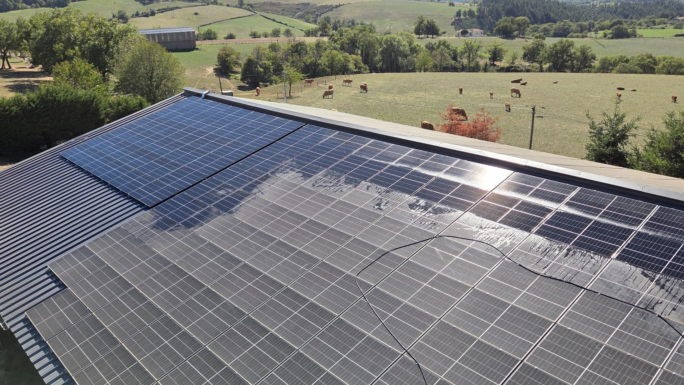
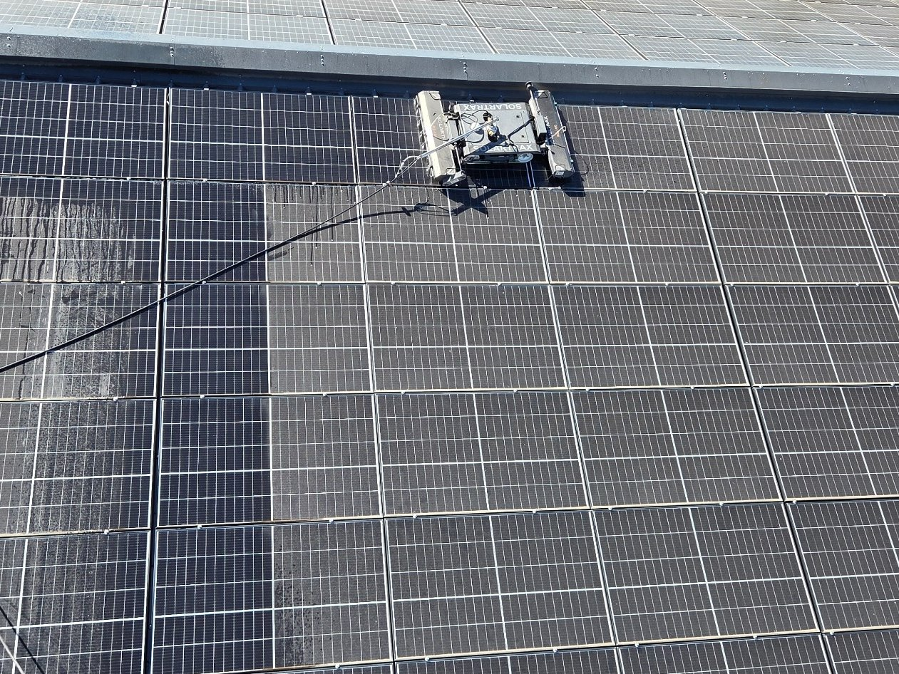
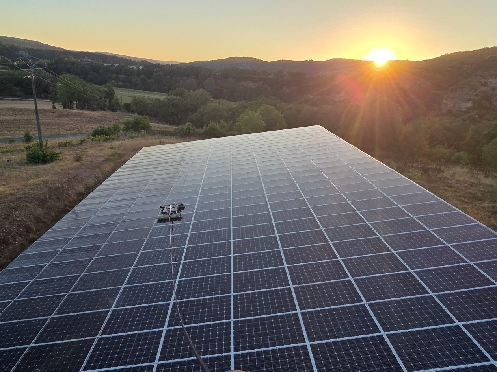
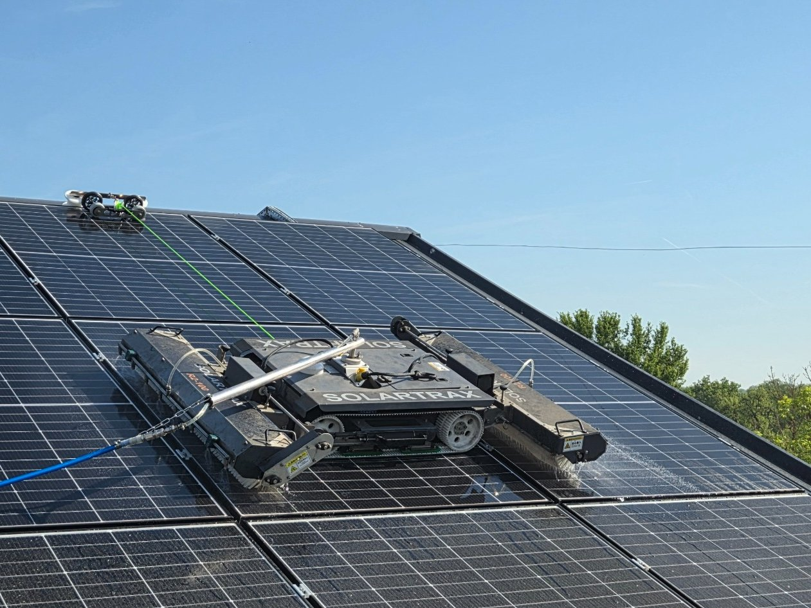
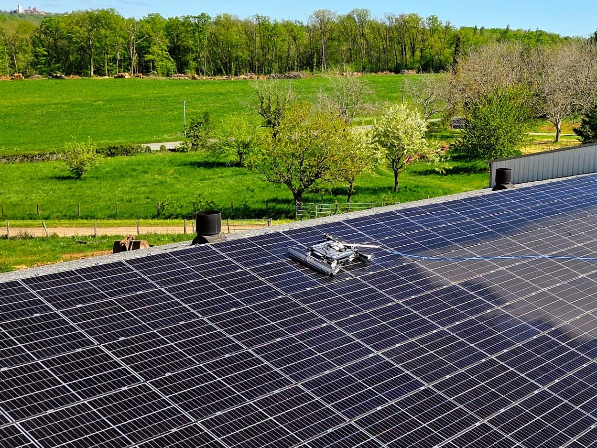
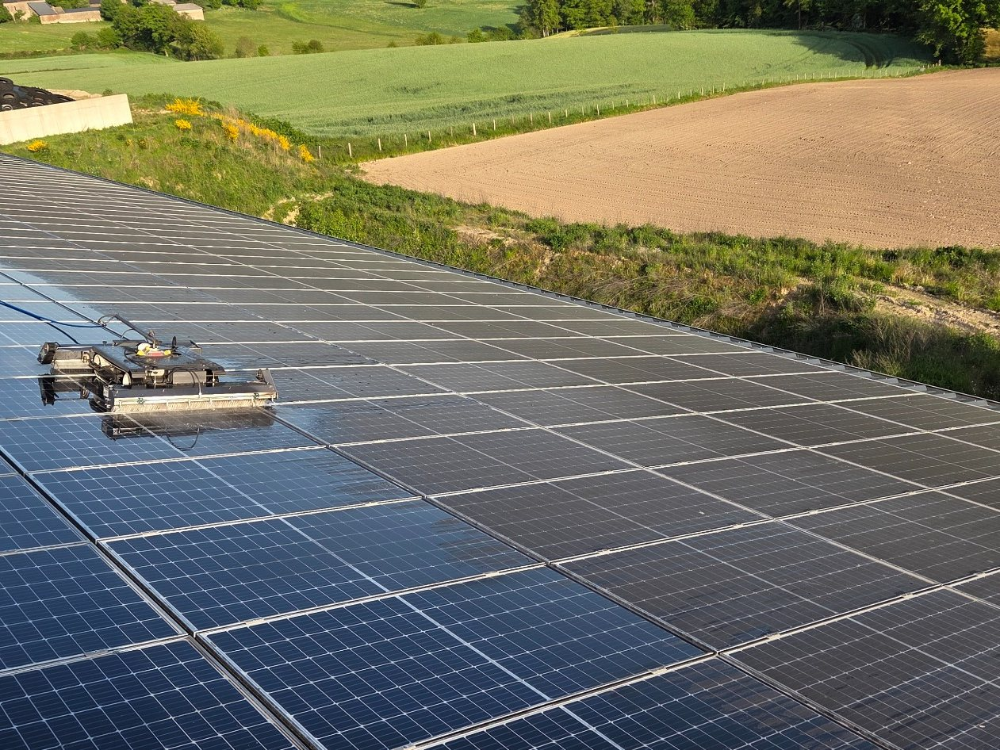
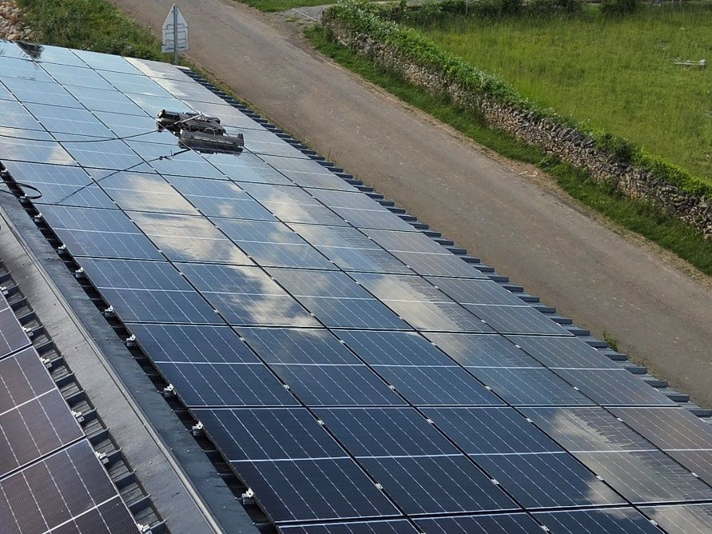
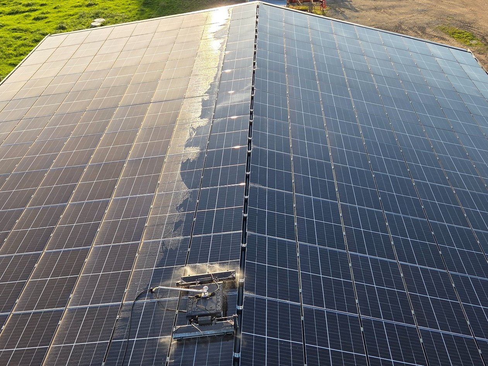

Proximité
Basés à Sainte-Croix, nous intervenons dans tout l'Aveyron et dans les secteurs limitrophes.

Aveyron & alentours
Un service local pour particuliers, exploitations agricoles, bâtiments industriels et tertiaires, ainsi que grandes installations photovoltaïques.
Un partenaire local
Basés à Sainte-Croix, nous intervenons dans tout l'Aveyron et dans les secteurs limitrophes.
Robot, brosses et solutions adaptées aux petites installations comme aux grandes toitures agricoles, industrielles et photovoltaïques.
Commune, puissance approximative et quelques photos suffisent souvent pour une première estimation.
Pourquoi nettoyer ?
Poussières, pollens, fientes et dépôts liés à l'environnement agricole peuvent s'accumuler sur les modules. Selon l'inclinaison, l'exposition et l'environnement, la pluie ne suffit pas toujours à éliminer ces dépôts.
Nous intervenons lorsque l'état de l'installation le justifie, avec une méthode adaptée au site et au niveau d'encrassement.

Des prestations adaptées
Chaque chantier est étudié selon la surface, l’accès, le niveau d’encrassement et les contraintes du site.
Intervention adaptée aux petites surfaces photovoltaïques et aux contraintes d’accès résidentielles.
Nettoyage de bâtiments agricoles, élevages et grandes surfaces photovoltaïques.
Entrepôts, ateliers, bâtiments logistiques, commerces et grandes toitures professionnelles.
Interventions étudiées selon la puissance, la configuration du site et les conditions d’accès.
Regrouper plusieurs passages proches peut permettre d’optimiser les déplacements.

Un métier que nous connaissons
Nous exploitons nous-mêmes des installations photovoltaïques. Cette expérience nous donne une lecture très concrète des enjeux de production, d'entretien, d'accès et de rentabilité d'une intervention.
Des réalisations près de chez vous
Des installations différentes, du résidentiel aux grandes toitures agricoles.




Proximité & organisation
Le regroupement de plusieurs interventions proches peut permettre d'optimiser les déplacements et donc le coût de chaque passage. Une solution particulièrement adaptée aux exploitations, voisins ou entreprises d'un même secteur.
Étudier un passage groupé →
Un projet ? Contactez-nous
Parlez-nous de votre installation : commune, puissance approximative et type de bâtiment.